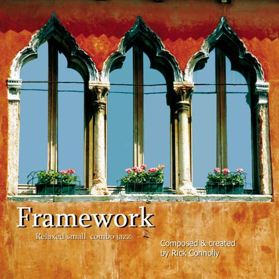
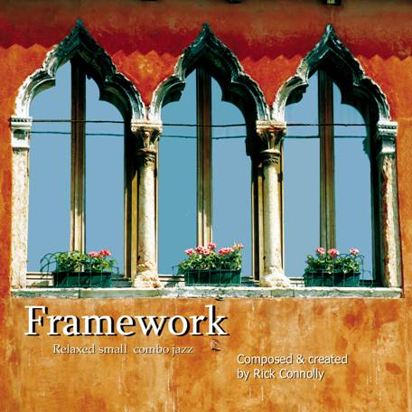

Boise's Sidemen Jazz Duo
Greg Perkins on Sax • Rick Connolly on Guitar
Upcoming Appearances
Riverside Hotel Lounge, Monday January 11 5:00-8:00pm
Booking Information
Please contact us at info@boisesidemen.com or call (208)344-2115.
Past Appearances
Private Parties & Receptions
More than a decade of Sundays in the Chandler's Steakhouse lounge
"Hot Air / Cool Jazz" concert for Spirit of Boise Festival
Barbacoa Benefit at the Egyption
Fridays at Piazza di Vino Art Gallery and Wine Bar
Tuesdays at the Crane Creek Bistro
Fridays at Poblano's
Tuesdays at Foodies&Fermenters
Tuesdays at Pair
Tuesdays at Lulu's
Performing Arts at the Capital City Public Market
Onomatopoeia Concert artist's feature
Katrina Jazz Benefit at the Big Easy
TVTV Jazz Special
The Owyhee Plaza Gamekeeper Lounge
The Winery at Eagle Knoll
Mosaic Gallery and Wine Bar
Boise Arts Celebration Opening Event Showcase
Main Stage at the Hyde Park Street Fair
Boise Music Week Music in the Park
Rick's Compositions
Check out Rick's original works on CD Baby!
You can also read the lead sheets online.


 

Our Favorite Standards
Afternoon In Paris
Airegin
Alfie
Alice In Wonderland
All Of Me
All The Things You Are
Almost Like Being In Love
Alone Together
Amber Eyes
Angel Eyes
Another Star
April In Paris
As Time Goes By
Audrey
Autumn In New York
Autumn Leaves
Autumn Nocturne
Avalon
Beautiful Love
Because
Bernie's Tune
Besame Mucho
Bewitched
Beyond The Sea
Black Coffee
Black Nile
Blue Bossa
Blue Moon
Bluesette
Body And Soul
But Beautiful
Bye Bye Blackbird
Carivan
Carnival (Black Orpheus)
Ceora
Charade
Cheek To Cheek
Chega De Saudade
Cherokee
Close Your Eyes
Corcovado
Cotton Tail
Cry Me A River
Dancing In The Dark
Danny Boy
Darn That Dream
Days Of Wine And Roses
Dean's Groovosity
Desafinado
Detour Ahead
Do Nothin' Till You Hear From Me
Dolphin Dance
Don't Ask Why
Don't Explain
Don't Get Around Much Anymore
Dream
Dream Dancing
Dreamsville
Easy Living
Embraceable You
Emily Jazz Waltz
Equinox
Estate
Eu Sei Que Vou Te Amar
Europa
Everything Happens To Me
Everything Must Change
Falling In Love
Favela
Felicidade, A
Flamingo
Flintstones
Fly Me To The Moon
Foggy Day, A
Four
Four Brothers
Garby The Great
Gentle Rain
Georgia On My Mind
Ghost Of A Chance
Girl From Ipanema, The
God Bless America
God Bless The Child
Good Morning Heartache
Goodbye Pork Pie Hat
Green Dolphin Street
Groovin' High
Harlem Nocturne
Have You Met Miss Jones
Here's That Rainy Day
Hot House
House Is Not A Home, A
How Do You Keep The Music Playing
How High the Moon / Ornithology
How Insensitive
I Can't Get Started
I Hear A Rhapsody
I Know Why And So Do You
I Left My Heart In San Francisco
I Let A Song (Go Out Of My Heart)
I Love You Just the Way You Are
I Remember Clifford
I Remember You
I'll Be Seeing You
I'll Remember April
I'm In A New York State Of Mind
I'm In The Mood For Love
I’ll Take Romance
I’ve Grown Accustomed To Your Face
Imagination
In The Wee Small Hours Of The Morning
In Walked Bud
In Your Own Sweet Way
Invitation
It Could Happen To You
It Don't Mean A Thing
It Had Better Be Tonight
It Might As Well Be Spring
It Was A Very Good Year
Jersey Bounce
Joy Spring
Just Friends
Killer Joe
Lady Is A Tramp
Lazy Bird
Like A Lover
Limehouse Blues
Line for Lyons
Little Boat
Liz-Anne
Look of Love
Love Dance
Lover Man
Lullaby Of Birdland
Lullaby Of The Leaves
Lulu's Back In Town
Lush Life
Masquerade
Meditation
Michelle
Midnight Sun
Misty
Moment To Moment
Moon River
Moondance
Moonglow
Moonlight In Vermont
More
More I See You, The
More Love
More Than You Know
Morning
My Foolish Heart
My Funny Valentine
My One And Only Love
My Romance
Naima
Nature Boy
Nearness Of You, The
Never Let Me Go
Night And Day
Night Has A Thousand Eyes, The
Night In Tunisia
O Grand Amore
Old Folks
On The Street Where You Live
On The Sunny Side Of The Street
Once I Loved
One Note Samba
Ornithology
Out Of Nowhere
Over The Rainbow
Pensativa
Phil's Flyin'
Pink Panther
Polkadots And Moonbeams
Pure Imagination
Quiet Now
Quizas, Quizas, Quizas
Recardo Bossa Nova
Recordame
Red Cheetah
Round Midnight
Rubber Ducky
Samba Cepeda
Samba De Orfeo
Satin Doll
Scotch And Soda
September Song
Shadow Of Your Smile, The
Shaker Song
Shiny Stockings
Skylark
Smile
Smoke Gets In Your Eyes
So Many Stars
Softly As In A Morning Sunrise
Some Of My Favorite Things
Someday My Prince Will Come
Someone To Watch Over Me
Sophisticated Lady
Speak Low
Stairway To The Stars
Stardust
Stars Fell On Alabama
Stella By Starlight
Stolen Moments
Strangers In The Night
Street Of Dreams
Suddenly
Summer Of '42, The
Summer Samba
Summertime
Sway
Sweet Georgia Brown
Sweet Lorraine
Take Five
Take The A Train
Tangerine
Tea For Two
Tenderly
That's All
The First Time I Ever Saw Your Face
The Man I Love
The Way You Look Tonight
There Will Never Be Another You
Thier's Tears
Things Ain't What They Used To Be
This Can’t Be Love
Tres Palabras
Triste
Tristeza
Two For The Road
Unforgettable
Up Jumped Spring
Watch What Happens
Wave
Well You Needn't
Wendy
What A Wonderful World
What Are You Doing The Rest Of Your Life
What'll I Do
What's New
When I Fall In Love
When Sunny Gets Blue
When You Wish Upon A Star
Whisper Not
Witchcraft
Yesterdays
You Are There
You Are Too Beautiful
You Don't Know What Love Is
You Go To My Head
You Taught My Heart To Sing
You're My Everything
You've Changed